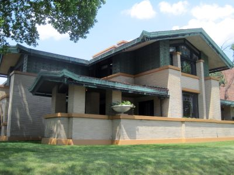
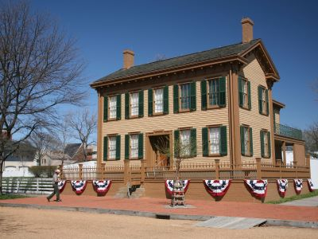
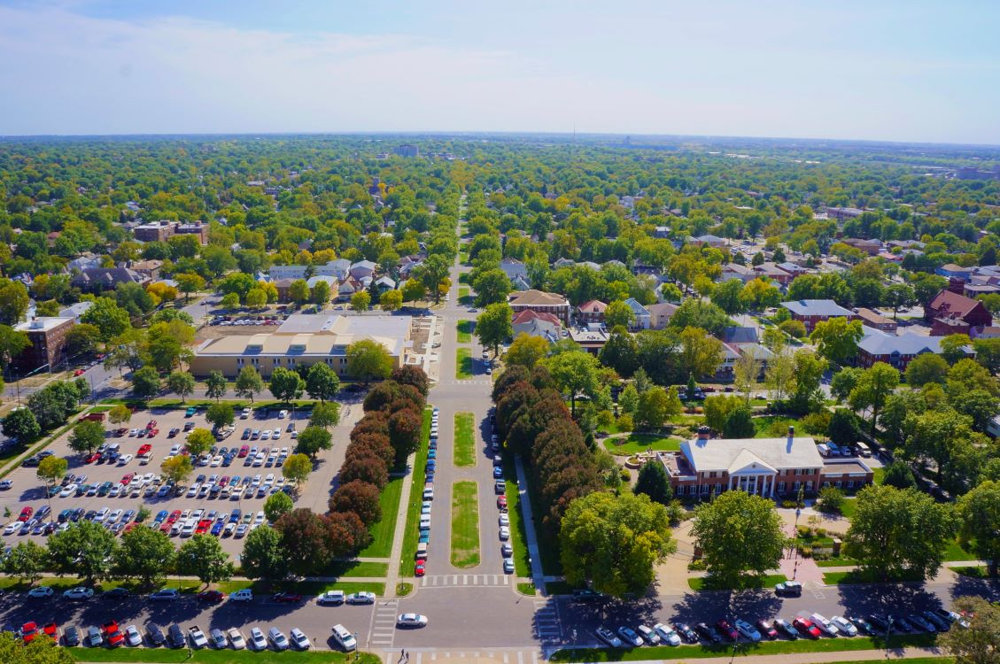

Springfield Travel Guide
Historic Midwestern capital city defined by presidential legacy, architecturally significant landmarks, and a walkable downtown centered on government, culture, and heritage tourism.
Places to See in Springfield

Des Moines Guy, CC BY-SA 3.0, via Wikimedia Commons; Image Size Adjusted

Abraham Lincoln Presidential Library and Museum
Immersive museum complex featuring interactive exhibits, life-size dioramas, original artifacts, and multimedia presentations chronicling the life and legacy of the 16th president of the United States.

Moses8910, CC BY-SA 4.0, via Wikimedia Commons; Image Size Adjusted

Cozy Dog Drive In
Historic Route 66 restaurant famous for inventing the original batter-dipped hot dog on a stick and preserving decades of roadside Americana memorabilia.

Danksergeant15, CC BY-SA 4.0, via Wikimedia Commons; Image Size Adjusted

Dana Thomas House State Historic Site
Architectural landmark showcasing a fully preserved Prairie School residence designed by Frank Lloyd Wright, featuring original custom furniture, art glass, and interior design.
First Resting Place of Abraham Lincoln
Historic burial vault where Abraham Lincoln's body was temporarily interred before final placement in the Lincoln Tomb.
Danksergeant15, CC BY-SA 4.0, via Wikimedia Commons; Image Size Adjusted
Illinois State Capitol
Architecturally grand government building featuring a towering dome, ornate interiors, and public galleries where visitors can observe state legislative sessions.
Dsmspence, CC BY-SA 3.0, via Wikimedia Commons; Image Size Adjusted

Illinois State Museum
Multilevel museum offering interactive exhibits, natural history displays, and cultural artifacts that explore the land, life, and people of Illinois.

Jeff P from Berkeley, CA, USA, CC BY 2.0, via Wikimedia Commons; Image Size Adjusted
.jpg){kind=link}
Lincoln Home National Historic Site
Preserved 19th-century residence and historic district offering ranger-led tours and exhibits that illuminate Abraham Lincoln’s life before the presidency.
Jeff P from Berkeley, CA, USA, CC BY 2.0, via Wikimedia Commons; Image Size Adjusted
Lincoln Tomb State Historic Site
Granite monument housing the remains of Abraham Lincoln and his family, featuring statuary, inscriptions, and a solemn burial chamber within a landscaped cemetery.
Moses8910, CC BY-SA 4.0, via Wikimedia Commons; Image Size Adjusted
Maid-Rite
Historic sandwich shop serving classic loose meat sandwiches from a nationally recognized landmark believed to include the nation’s first drive-through window.
Jeff P from Berkeley, CA, USA, CC BY 2.0, via Wikimedia Commons; Image Size Adjusted
Old State Capitol State Historic Site
Reconstructed 19th-century capitol building offering guided tours and exhibits that explore Illinois politics and Abraham Lincoln’s early legal and legislative career.
Springfield Union Station
Restored historic train station now serving as a visitor center and event space, featuring a towering clock tower and proximity to major Lincoln heritage sites.
Union Square Park
Landscaped urban park featuring a bronze Lincoln statue, floral gardens, and open green space adjacent to the Abraham Lincoln Presidential Library and Museum.
Washington Park
Scenic urban park featuring wooded trails, lagoons, historic pavilions, and recreational facilities including tennis courts and a playground.
Washington Park Botanical Garden
Expansive botanical garden and conservatory showcasing over 1,200 plant species across themed outdoor gardens and a tropical dome.
Overview
Springfield is the capital of Illinois and is best known as the home of Abraham Lincoln, who lived and practiced law here from 1837 until he left for Washington in 1861. The city is one of the most important sites in the country for Lincoln history, with his home, tomb, law office, and presidential library all within a short distance of one another. It is also a stop on historic Route 66, home of the Illinois State Capitol, and the place where the corn dog on a stick, called the "Cozy Dog," was popularized.
Visitors come to Springfield for the Lincoln Home National Historic Site, the Abraham Lincoln Presidential Library and Museum, the Lincoln Tomb, and the Old State Capitol, as well as for Route 66 diners and the Dana-Thomas House by Frank Lloyd Wright. It is a compact, affordable, and family-friendly city that is easy to explore in a weekend and is a good stop between Chicago and St. Louis.
History
Springfield was founded in 1821 as the seat of Sangamon County and became the state capital in 1839, in part because of the efforts of the "Long Nine," a group of tall legislators that included Abraham Lincoln, who led the move from Vandalia. Lincoln arrived in 1837, married Mary Todd here in 1842, and lived in the house at Eighth and Jackson Streets until 1861, and he gave his "House Divided" speech in the Old State Capitol in 1858. After his assassination in 1865, his body was returned to Springfield for burial, and the city has been a center of Lincoln remembrance ever since. Springfield later grew as a coal mining and railroad center, and in the 1920s it became a stop on Route 66.
Sightseeing and Popular Landmarks
The Lincoln Home National Historic Site preserves the only home that Lincoln ever owned, in a restored neighborhood of nineteenth-century buildings, and the Lincoln Tomb in Oak Ridge Cemetery is the site of his burial. The Illinois State Capitol, completed in 1888, has a dome that is taller than the U.S. Capitol and is open for free tours. Other sights include the Old State Capitol, the First Resting Place of Abraham Lincoln, the Springfield Union Station, and the Route 66 favorites Cozy Dog Drive In and Maid-Rite.
Culture and Museums
The Abraham Lincoln Presidential Library and Museum is among the best presidential museums in the country, with immersive exhibits and one of the largest collections of Lincoln documents. The Illinois State Museum covers the natural and cultural history of the state, and the Dana-Thomas House is a well-preserved Prairie School home designed by Frank Lloyd Wright, with more than 100 pieces of original furniture and art glass. The Old State Capitol and the Lincoln-Herndon Law Offices also bring the Lincoln era to life, and the Springfield area also hosts the Illinois State Fair each August.
Parks
Springfield has a number of parks that offer relief from the sightseeing. Washington Park has a carillon and the Washington Park Botanical Garden, and Union Square Park is near the Lincoln sites downtown. Lincoln Memorial Garden and Nature Center on Lake Springfield has woodland trails, and Lake Springfield itself offers boating and fishing. The Lincoln Trail and the Interurban Trail are popular for walking and biking.
Seasons and Weather
Springfield has a humid continental climate with hot, humid summers and cold winters. Summer highs are in the upper 80s°F, winter highs are in the 30s°F, and snowfall averages about 24 inches per year. Spring and fall are generally the most comfortable seasons for walking tours, and thunderstorms and occasional tornadoes are possible in spring and early summer. The Illinois State Fair in August and the Springfield Old Capitol Art Fair in May are popular events.
This article uses material from Wikipedia as well as information from official tourism and institutional sources. Key references include Visit Springfield Illinois, Lincoln Home National Historic Site, Abraham Lincoln Presidential Library and Museum, Illinois State Museum, Illinois Historic Preservation Agency, and National Weather Service Lincoln. Wikipedia material is from the articles "Springfield, Illinois" and "Abraham Lincoln", and is available under the Creative Commons Attribution-Share-Alike License 3.0.
.jpg){kind=link}
